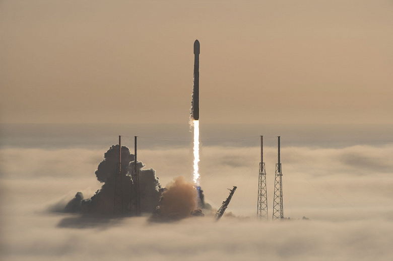
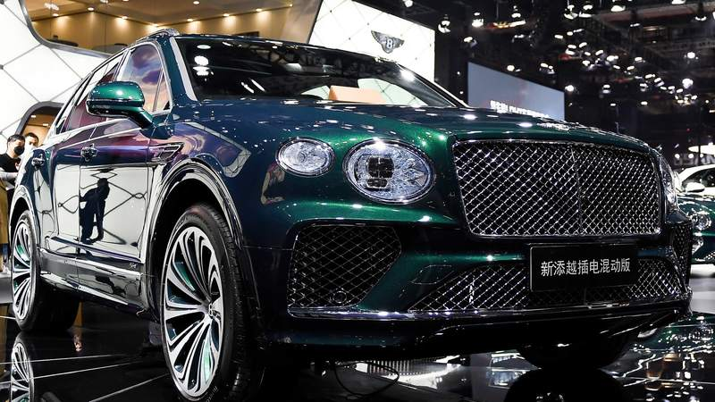

Изображение логотипа информационного ресурса ALEXNEWS.BY
Информационный ресурс ALEXNEWS.BY
Главная
Последние новости:
На фоне роста заболеваемости COVID-19 ВОЗ просит страны не отменять карантинные меры
Практически каждая страна Европы и Центральной Азии переживает очередную волну пандемии либо стоит перед такой угрозой – нынешний темп распространения COVID-19 в этом регионе бьет рекорды. Об этом с большой обеспокоенностью сообщают из ВОЗ. На прошлой неделе в Европе и Центральной Азии было выявлено 1,8 млн новых случаев COVID-19, 24 тысячи человек скончались. Рост этих показателей по сравнению с предыдущей неделей составил 6 и 12 процентов соответственно. Более того, именно на Европу и Азию пришлось 59 процентов глобальной заболеваемости и 48 процентов всех случаев летального исхода. Учитывая сложившуюся в регионе тревожную ситуацию, в ВОЗ призвали все страны, ослабившие карантинные меры, пересмотреть свое решение.
SpaceX запустила ракету Falcon 9. Она вывела на орбиту еще 53 спутника Starlink
Компания SpaceX сообщила в своем Twitter о запуске ракеты-носителя Falcon 9 с 53 спутниками Starlink...
Подробнее
Ракету-носитель запустили с космодрома в американском штате Флорида. Использованная при запуске первая ступень Falcon 9 вскоре после старта совершила посадку на плавучую платформу в Атлантике. Starlink - спутниковая сеть следующего поколения, способная обеспечить жителей Земли широкополосным доступом в интернет. Реализация проекта началась в феврале 2018 года. Его цель - обеспечить доступ к высокоскоростному интернету в любой точке планеты.

Запуск ракеты-носителя Falcon 9 с 53 спутниками Starlink
На данный момент количество запущенных спутников SpaceX уже приближается к двум тысячам. В будущем планируется запустить еще несколько десятков тысяч. Сегодня абонентами компании являются 100 000 человек.
Bentley продает рекордное количество авто, несмотря на кризис автопрома
Bentley, британский производитель автомобилей люкс-класса, обновляет рекорды продаж и прибыльности, даже когда остальная индустрия сокращает производство...
Подробнее
Автопроизводитель, которому недавно исполнилось 100 лет, за 2020 продал рекордные 11 206 авто, несмотря на пандемию коронавируса. Только за первое полугодие 2021 года компания уже продала более 7 тысяч машин, и получила большую прибыль, чем в любой прошлый год. В компании объясняют, что высокая цена их продукции позволяет покупать детали по цене, неподъемной для производителей более дешевых машин.

Внедорожник класса люкс - bentley bentayga Hybrid
Bentley планирует использовать этот момент, чтобы полностью перейти на электрокары. Первая модель на электродвигателе выйдет в 2025, и уже через несколько лет компания будет производить только электромобили. Однако визитной карточкой бренда считается 12-цилиндровый двигатель — редкость за пределами люкс-класса. Поэтому вопрос, удастся ли Bentley сохранить свою идентичность, остается открытым.
Вспомним первую часть из серии фильмов "Трансформеры" режисёра Майкла Бэя